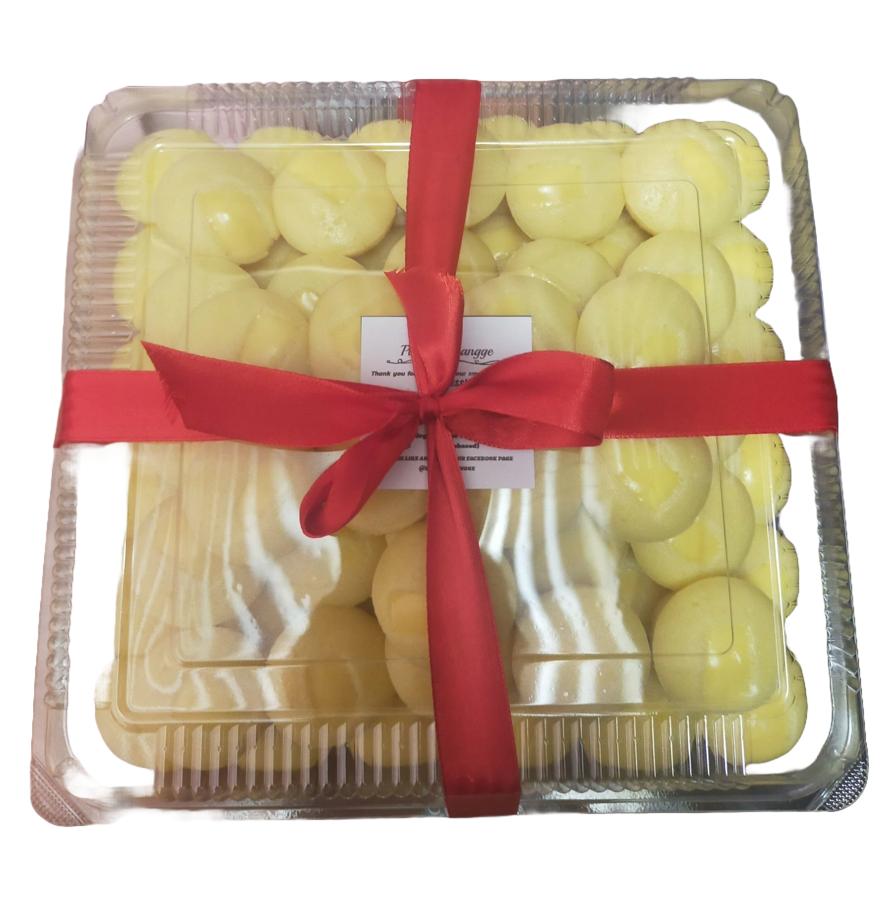

<link rel="stylesheet" href="https://cdnjs.cloudflare.com/ajax/libs/font-awesome/6.7.2/css/all.min.css">
    <link rel="stylesheet" href="https://cdn.jsdelivr.net/npm/swiper@11/swiper-bundle.min.css">
    <link rel="stylesheet" href="style.css">

    <header>
        <nav class="navbar section-content">
            <a href="#" class="nav-logo">
               <h2 class="logo-text">PutoNiChangge</h2>
            </a>
            <ul class="nav-menu">
                <button id="menu-close-button" class="fas fa-times"></button>
                <li class="nav-item">
                    <a href="index.html" class="nav-link">Home</a>
                </li>
                <li class="nav-item">
                    <a href="about.html" class="nav-link">About</a>
                </li>
                <li class="nav-item">
                    <a href="menu.html" class="nav-link">Menu</a>
                </li>
                <li class="nav-item">
                    <a href="testimonial.html" class="nav-link">Testimonial</a>
                </li>
                <li class="nav-item">
                    <a href="gallery.html" class="nav-link">Gallery</a>
                </li>
                <li class="nav-item">
                    <a href="contact.html" class="nav-link">Contact</a>
                </li>
            </ul>

            <button id="menu-open-button" class="fas fa-bars"></button>


        </nav>
    </header>


    <section class="about-section">
        <div class="section-content">
            <div class="about-image-wrapper">
                
            </div>
            <div class="about-details">
                <h2 class="section-title">About Us</h2>
                <p class="text">At PutoNiChannge, we are passionate about bringing you soft, fluffy, and mouthwatering puto that satisfies every craving. Since our official launch on May 21, 2021, we have been dedicated to crafting the perfect puto, using high-quality ingredients and a touch of homemade goodness.
                    Through hard work and the love of our amazing customers, we have proudly sold 1,000+ puto</p>
                    <div class="social-link-list">
                        <a href="https://www.facebook.com/putonichangge" class="social-link"><i class="fa-brands fa-facebook"></i> </a>
                        <a href="#" class="social-link"><i class="fa-brands fa-instagram"></i> </a>
                        <a href="#" class="social-link"><i class="fa-brands fa-x-twitter"></i> </a>
                    </div>
            </div>
        </div>
    </section>
    